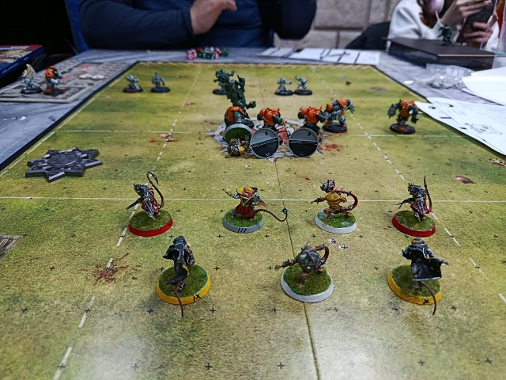
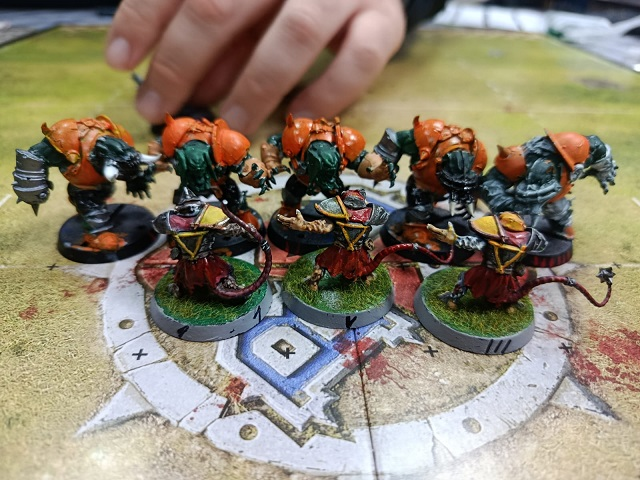

PDFs actas de partido
Sergio VS Raul Frank VS Rodrigo M Enric VS Santi Miguel VS Rodrigo H

15/04/25
-¡Estimados fans del deporte! la mala climatolgía y el escandalo del dopaje que ha salpicado al equipo de nigromantes Smoking Aces ha hecho que algunos partidos de esta jornada se hayan disputado con retaso.
-Ha sido un espectáculo bochornoso, Jim. Y lo peor que los nigrohechizos empleados iban todos encaminados a realizar mejores pases y recpciones. ¡Ni uno para romper mas armaduras! ¿Que sentido tiene eso?
-Estoy muy de acuerdo, Bob. En cualquier caso la jornada por fin pudo terminarse y hay interesantes movimientos en la tabla general.
-Desde luego, Jim. EL que empieza a ser mi equipo favorito continua lider aunque solo consiguiera herir a un par de elfos esmirrados.
-Correcto, Bob. Y no nos olvidemos de sus perseguidores. ¡A tan solo un punto! Norses y Skavens estan al acecho.
-Y se oyen rumores de alcantarilla, Jim. Es posible que en el próximo partido las ratas del duero den una sorpresita... ¡Al estilo ogro! Ja, ja, ja
-Je, je, je... si eso mismo había oido yo, Bob. Estaremos muy pendientes de estas ratas...
16/03/25
-¡Hola, Bob! La Jornada 5 da comienzo con el enfrentamiento entre los Orcos negros de Ruben y los skaven de Enric
-No ha sido un mal partido, Jim. Aunque si te soy sincero esperaba muchas mas ratas magulladas. Quiza estos orcos negros se esten ablandando...
-Muy de acuerdo, Bob. Sin embargo los aficionados que gustan de un juego más... florido? o elegante... habran disfrutado de lo lindo con la actuacion del jugador numero 9 que marcó la increible cifra de ¡Tres touchdowns!
-Seguro que hay quien le guste esa clase de juego, Jim. Sin embargo ya sabes que para mí y la mayoría de expertos esa no es la esencia del juego...

